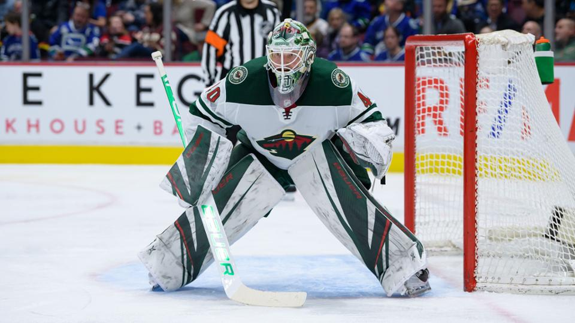
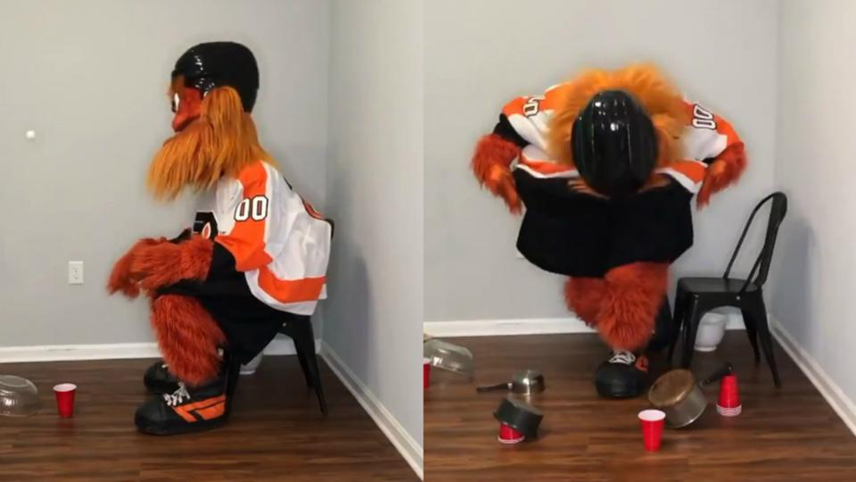
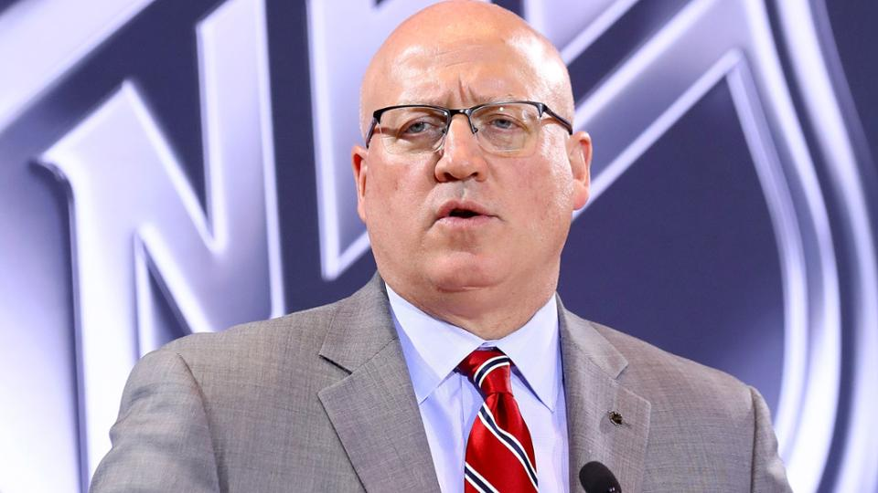
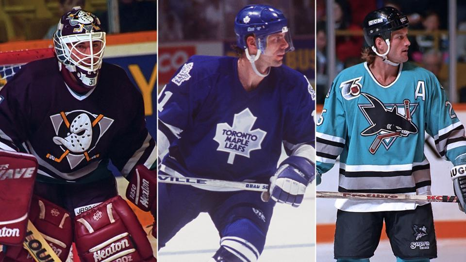

Dubnyk räknar med att återta startposition för Wild
Devan Dubnyk sa att han tror att hans liv så småningom kommer att återgå till det normala, och det inkluderar att vara nr 1-målvakt för Minnesota Wild.
34-åringen, som gjorde NHL All-Star Game för tredje gången förra säsongen, förlorade sitt startjobb till Alex Stalock innan NHL pausade den här säsongen 12 mars på grund av oro kring koronaviruset.
"Jag är samma målvakt som jag har varit i hela min karriär, och jag förväntar mig verkligen att bli en startmålsman," sade Dubnyk torsdag. "Och förväntar mig verkligen att bli det igen."
Det är oklart vad Wild goalie-planen kommer att bli om NHL återupptar den här säsongen. Innan spelet stoppades var Stalock tydligt Minnesota nr. 1 och hjälpte sin körning mot en kaj i Stanley Cup Playoffs.

Gritty levererar en annan spektakulär trick-video
Lägg till trick shot master till listan över Grittys titlar.
Philadelphia Flyers-maskot avslöjade ytterligare en exceptionell video av honom som skjuter ping-pongbollar i plastkoppar onsdag.
Gritty svär att han inte är uttråkad under NHL-pausen, men han har kommit fram till hur han framgångsrikt kan studsa bollen från skålar, väggar, krukor och kokkärl och ändå lägga den i koppen.
Han tog en välförtjänt båge efter att ha avslutat det slutliga skottet.
Detta var den andra trick-shot video han släppte under den senaste månaden. Vi kan bara hoppas att de fortsätter.

Coronavirus-testning nyckelfråga för eventuell omstart av NHL-säsongen
Täta tester skulle vara en viktig del av alla scenarier som NHL och NHL Players Association överväger för att återuppta säsongen, som pausades 12 mars på grund av oro kring coronavirus.
NHL-biträdande kommissionär Bill Daly diskuterade den frågan och andra i två radiointervjuer fredag.
"Vi kommer att behöva ha tillgång till tester, och vi kommer att göra det till en punkt att vi inte får åtkomst till tester, inte ens på ett privat sätt, om testning av tillgänglighet är ett problem i samhället," berättade Daly 630 CHED i Edmonton. "Vi kommer inte att testa asymptomatiska spelare inför symtomatiska personer som inte kan testas. Det är bara något vi inte kommer att göra."
Daly berättade för TSN 1050 i Toronto att det faktiska testprotokollet ännu inte har fastställts.
"Det finns ett antal potentiella lösningar som [ställs] för oss och de andra idrottsligorna och till andra organisationer varje dag, och jag skulle säga att det är en viktig del av processen när det gäller att se till att du grundligt vet det och förstår den testlösning du omfattar, sa Daly.
Daly berättade för TSN 1050 att ett antal NHL-städer och arenor hade närmade sig ligan om värdspel om NHL beslutar att spela på centraliserade platser och bekräftade för CHED att Edmonton är "definitivt i mixen."

Fredag fyra: Tröjor lag bör ta tillbaka
Anaheim Ducks
Det svarta, orange och guldet som duckarna bär nu är inte dem. Jag vet att de vann en Stanley Cup i dessa färger 2007, men de måste ta tillbaka gräsand med målmask. Anaheim bar en version av den looken för att fira 25-årsjubileum 2018-19 med en svart bas och den gamla gräsandlogotypen, och det var fantastiskt.
När du tänker "Anaheim Ducks", tänker du på de auberginefärgade tröjorna med gräsandlogotypen och de korsade hockeyknapparna. Till och med den vita tröjan med den logotypen, med kricka som kom upp från botten med silver- och aubergine accentband, var klassisk. De bör bära de heltid.
Toronto Maple Leafs
Jag tror att deras tröjor från 1980-talet och början av 1990-talet är ännu bättre än de de rockar nu. Kanske beror det på att jag växte upp i Toronto, men Felix Potvin-era tröjorna var fantastiska. Inte för att de de bär nu inte är; alla Original Sex-lag har fantastiska tröjor. Jag gillade precis hur det enkla blad och djärva formuleringen sprang, med kontrasterande färger på axlarna och ärmarna. Jag skulle vilja se dem bära på heltid.
De hade också Leafs-logoerna på axeln. Jag älskade just de vita vita (vid den tiden) med det blå bladet och bortblåsen med det vita bladet. Det visar att du inte behöver byta tröja ofta om det är snyggt.
San Jose Sharks
De ursprungliga Sharks-tröjorna som bärs 1991-97 var, tror jag, en av de största genom tiderna. Du kan sätta den logotypen för hajen som chompade på en hockeyklubba på vad som helst och det skulle se bra ut, men färgschemat för den första tröjan de hade gjort det speciellt. Jag tycker att de borde ha dem hemma nu och kan använda sina nuvarande kricka-tröjor som tredje tröjor.
Gordie Howe debuterade den ursprungliga tröjan, som förblir en snygg look i dag. Den svarta, vita och silverfärgade ärmen på ärmarna gav den en typ av vintage-look, och precis som den ursprungliga Ducks-tröjan som debuterade två säsonger senare, önskar jag att den fortfarande bärs i NHL.
Quebec Nordiques
Jag vet att franchisen flyttade och blev Colorado Avalanche 1995, men kanske Avalanche kunde bära dessa tröjor vid någon tidpunkt. Jag älskade de blå vägtröjorna och de vita hemtröjorna, som var installationen då. De var rena och skarpa, med fleur de lis på axlarna och runt midjan.
Jag tycker att det var fantastiskt att spela i en turnering som barn på den gamla Colisee de Quebec klockan 13. Quebec City är en speciell plats för mig; det var där jag utarbetades (1993). Allt att säga jag saknar de tröjorna.